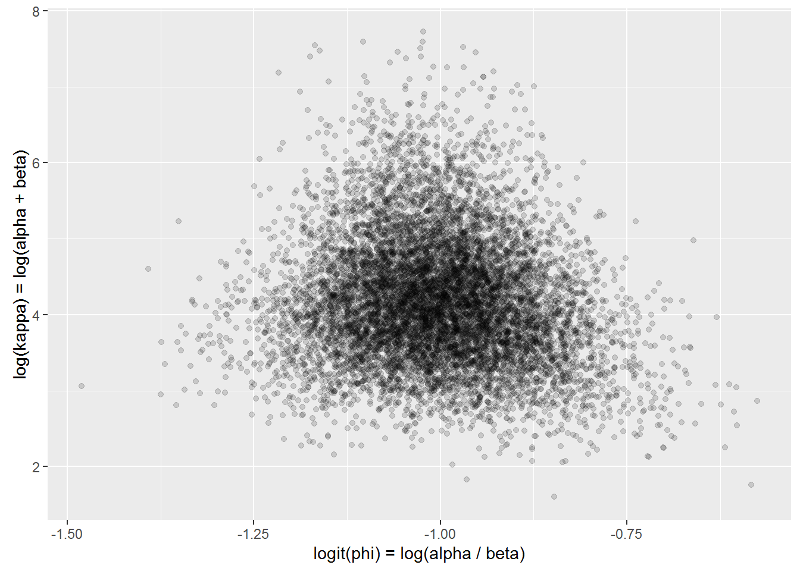
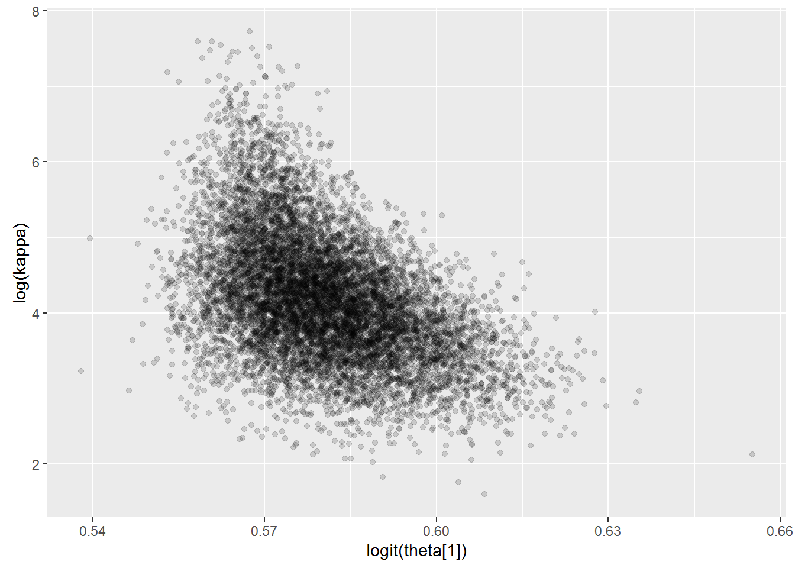
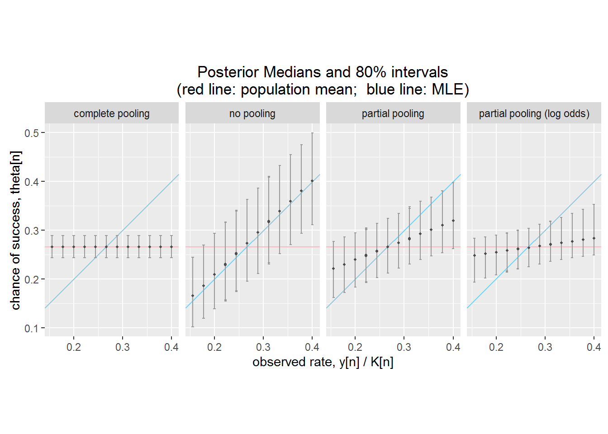
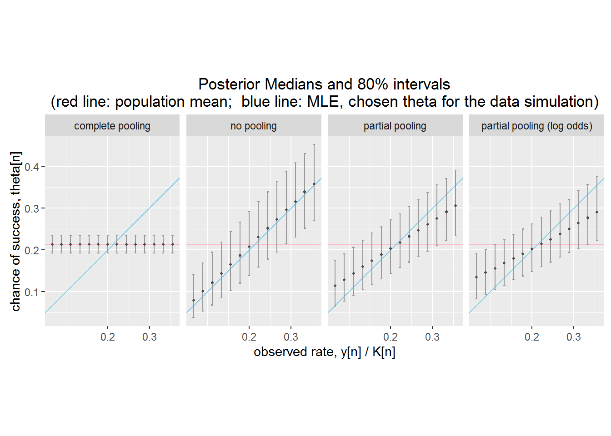
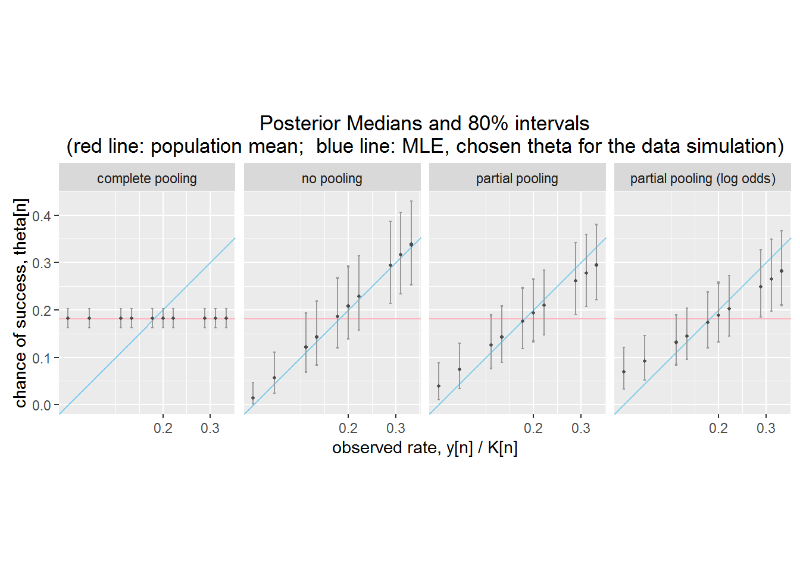

Excercises for http://mc-stan.org/documentation/case-studies/pool-binary-trials.html Hierarchical Partial Pooling for Repeated Binary Trials
library(rstan);
rstan_options(auto_write = TRUE)
options(mc.cores = parallel::detectCores())
df <- read.csv("efron-morris-75-data.tsv", sep="\t");
df <- with(df, data.frame(FirstName, LastName,
Hits, At.Bats,
RemainingAt.Bats,
RemainingHits = SeasonHits - Hits));
print(df);## FirstName LastName Hits At.Bats RemainingAt.Bats RemainingHits
## 1 Roberto Clemente 18 45 367 127
## 2 Frank Robinson 17 45 426 127
## 3 Frank Howard 16 45 521 144
## 4 Jay Johnstone 15 45 275 61
## 5 Ken Berry 14 45 418 114
## 6 Jim Spencer 14 45 466 126
## 7 Don Kessinger 13 45 586 155
## 8 Luis Alvarado 12 45 138 29
## 9 Ron Santo 11 45 510 137
## 10 Ron Swaboda 11 45 200 46
## 11 Rico Petrocelli 10 45 538 142
## 12 Ellie Rodriguez 10 45 186 42
## 13 George Scott 10 45 435 132
## 14 Del Unser 10 45 277 73
## 15 Billy Williams 10 45 591 195
## 16 Bert Campaneris 9 45 558 159
## 17 Thurman Munson 8 45 408 129
## 18 Max Alvis 7 45 70 14N <- dim(df)[1]
K <- df$At.Bats # initial trials
y <- df$Hits # initial successes
K_new <- df$RemainingAt.Bats; # new trials
y_new <- df$RemainingHits; # new successesFitting the model.Assuming each player’s at-bats are independent Bernoulli trials and each player is independent leads to the complete data likelihood \(p(y \, | \, \phi) = \prod_{n=1}^N \mathsf{Binomial}(y_n \, | \, K_n, \phi)\).
Model specification chunck in pool.stan for the fully pooled model is
parameters { real
M <- 10000;
fit_pool <- stan("pool.stan", data=c("N", "K", "y", "K_new", "y_new"),
iter=(M / 2), chains=4);## Loading required namespace: rstudioapiss_pool <- extract(fit_pool);
print(fit_pool, c("phi"), probs=c(0.1, 0.5, 0.9));## Inference for Stan model: pool.
## 4 chains, each with iter=5000; warmup=2500; thin=1;
## post-warmup draws per chain=2500, total post-warmup draws=10000.
##
## mean se_mean sd 10% 50% 90% n_eff Rhat
## phi 0.27 0 0.02 0.24 0.27 0.29 8472 1
##
## Samples were drawn using NUTS(diag_e) at Sun Feb 12 17:04:55 2017.
## For each parameter, n_eff is a crude measure of effective sample size,
## and Rhat is the potential scale reduction factor on split chains (at
## convergence, Rhat=1).
## The estimated Bayesian Fraction of Missing Information is a measure of
## the efficiency of the sampler with values close to 1 being ideal.
## For each chain, these estimates are
## 0.8 0.8 0.9 0.8Let us turn now to the no-pooled model. Model specification chunck in nopool.stan for the no pooled model is
parameters { vector
fit_no_pool <- stan("no-pool.stan", data=c("N", "K", "y", "K_new", "y_new"),
iter=(M / 2), chains=4);## Warning in find_rtools(): WARNING: Rtools 3.4 found on the path at c:/Rtools is not compatible with R 3.3.2.
##
## Please download and install Rtools 3.3 from http://cran.r-project.org/bin/windows/Rtools/, remove the incompatible version from your PATH, then run find_rtools().ss_no_pool <- extract(fit_no_pool);Get the model fit
print(fit_no_pool, c("theta"), probs=c(0.1, 0.5, 0.9));## Inference for Stan model: no-pool.
## 4 chains, each with iter=5000; warmup=2500; thin=1;
## post-warmup draws per chain=2500, total post-warmup draws=10000.
##
## mean se_mean sd 10% 50% 90% n_eff Rhat
## theta[1] 0.40 0 0.07 0.31 0.40 0.50 8971 1
## theta[2] 0.38 0 0.07 0.29 0.38 0.47 9480 1
## theta[3] 0.36 0 0.07 0.27 0.36 0.45 9602 1
## theta[4] 0.34 0 0.07 0.25 0.34 0.43 9189 1
## theta[5] 0.32 0 0.07 0.23 0.32 0.41 9436 1
## theta[6] 0.32 0 0.07 0.23 0.32 0.41 8994 1
## theta[7] 0.30 0 0.07 0.21 0.30 0.39 8655 1
## theta[8] 0.28 0 0.06 0.20 0.27 0.36 9163 1
## theta[9] 0.25 0 0.06 0.17 0.25 0.34 8566 1
## theta[10] 0.26 0 0.06 0.18 0.25 0.34 9303 1
## theta[11] 0.23 0 0.06 0.16 0.23 0.32 9555 1
## theta[12] 0.23 0 0.06 0.16 0.23 0.32 8961 1
## theta[13] 0.23 0 0.06 0.16 0.23 0.32 8855 1
## theta[14] 0.23 0 0.06 0.15 0.23 0.32 9318 1
## theta[15] 0.23 0 0.06 0.16 0.23 0.32 8808 1
## theta[16] 0.21 0 0.06 0.14 0.21 0.29 8730 1
## theta[17] 0.19 0 0.06 0.12 0.19 0.27 9697 1
## theta[18] 0.17 0 0.06 0.10 0.17 0.24 9822 1
##
## Samples were drawn using NUTS(diag_e) at Sun Feb 12 17:06:25 2017.
## For each parameter, n_eff is a crude measure of effective sample size,
## and Rhat is the potential scale reduction factor on split chains (at
## convergence, Rhat=1).
## The estimated Bayesian Fraction of Missing Information is a measure of
## the efficiency of the sampler with values close to 1 being ideal.
## For each chain, these estimates are
## 1 0.9 1 1Let us now conisder the partial pooling model (hierarchical). We will assume a beta distribution as the prior.
$ p(_n , | , , ) = (_n , | , , )$.
The hyperpriors are reparameterize to \(\alpha = \kappa \, \phi\) and \(\beta = \kappa \, (1 - \phi)\).
Thus \(\phi = \frac{\alpha}{\alpha + \beta}\) and \(\kappa = \alpha + \beta\). We have uniform prior on uniform prior on \(\phi\) and a Pareto prior on \(\kappa\)
fit_hier <- stan("hier.stan", data=c("N", "K", "y", "K_new", "y_new"),
iter=(M / 2), chains=4,
seed=1234,
control=list(stepsize=0.01, adapt_delta=0.99));## Warning in find_rtools(): WARNING: Rtools 3.4 found on the path at c:/Rtools is not compatible with R 3.3.2.
##
## Please download and install Rtools 3.3 from http://cran.r-project.org/bin/windows/Rtools/, remove the incompatible version from your PATH, then run find_rtools().## Warning: There were 1 divergent transitions after warmup. Increasing
## adapt_delta above 0.99 may help.## Warning: Examine the pairs() plot to diagnose sampling problemsss_hier <- extract(fit_hier);print(fit_hier, c("theta", "kappa", "phi"), probs=c(0.1, 0.5, 0.9));## Inference for Stan model: hier.
## 4 chains, each with iter=5000; warmup=2500; thin=1;
## post-warmup draws per chain=2500, total post-warmup draws=10000.
##
## mean se_mean sd 10% 50% 90% n_eff Rhat
## theta[1] 0.32 0.00 0.05 0.26 0.32 0.40 4239 1.00
## theta[2] 0.31 0.00 0.05 0.25 0.31 0.38 4917 1.00
## theta[3] 0.31 0.00 0.05 0.25 0.30 0.37 10000 1.00
## theta[4] 0.30 0.00 0.05 0.24 0.29 0.36 10000 1.00
## theta[5] 0.29 0.00 0.05 0.23 0.28 0.35 10000 1.00
## theta[6] 0.29 0.00 0.05 0.23 0.28 0.34 10000 1.00
## theta[7] 0.28 0.00 0.04 0.22 0.27 0.33 10000 1.00
## theta[8] 0.27 0.00 0.04 0.21 0.27 0.32 10000 1.00
## theta[9] 0.26 0.00 0.04 0.20 0.26 0.31 10000 1.00
## theta[10] 0.26 0.00 0.04 0.20 0.26 0.31 10000 1.00
## theta[11] 0.25 0.00 0.04 0.19 0.25 0.30 10000 1.00
## theta[12] 0.25 0.00 0.04 0.19 0.25 0.30 10000 1.00
## theta[13] 0.25 0.00 0.04 0.19 0.25 0.30 10000 1.00
## theta[14] 0.25 0.00 0.04 0.19 0.25 0.30 10000 1.00
## theta[15] 0.25 0.00 0.04 0.19 0.25 0.30 10000 1.00
## theta[16] 0.24 0.00 0.04 0.18 0.24 0.29 10000 1.00
## theta[17] 0.23 0.00 0.04 0.17 0.23 0.29 10000 1.00
## theta[18] 0.22 0.00 0.04 0.16 0.22 0.28 5344 1.00
## kappa 98.05 4.32 131.17 24.76 61.41 194.61 922 1.01
## phi 0.27 0.00 0.02 0.24 0.27 0.29 5163 1.00
##
## Samples were drawn using NUTS(diag_e) at Sun Feb 12 17:08:43 2017.
## For each parameter, n_eff is a crude measure of effective sample size,
## and Rhat is the potential scale reduction factor on split chains (at
## convergence, Rhat=1).
## The estimated Bayesian Fraction of Missing Information is a measure of
## the efficiency of the sampler with values close to 1 being ideal.
## For each chain, these estimates are
## 0.5 0.5 0.5 0.5Plot the fitted values for \(\phi\) and \(\kappa\) on the unconstrained scale, which is the space over which Stan is sampling.
df_bda3_fig_5_3 <- with(ss_hier,
data.frame(x = log(phi / (1 - phi)),
y = log(kappa)));
phi_sim <- ss_hier$phi;
kappa_sim <- ss_hier$kappa;
df_bda3_fig_5_3 <- data.frame(x = log(phi_sim / (1 - phi_sim)),
y = log(kappa_sim));
library(ggplot2);
plot_bda3_fig_5_3 <-
ggplot(df_bda3_fig_5_3, aes(x=x, y=y)) +
geom_point(shape=19, alpha=0.15) +
xlab("logit(phi) = log(alpha / beta)") +
ylab("log(kappa) = log(alpha + beta)");
plot_bda3_fig_5_3;
and for a specefic theta
inv_logit <- function(u) { 1 / (1 + exp(-u)); }
theta1_sim <- ss_hier$theta[ , 1];
kappa_sim <- ss_hier$kappa;
df_funnel <- data.frame(x = inv_logit(theta1_sim),
y = log(kappa_sim));
library(ggplot2);
plot_funnel<-
ggplot(df_funnel, aes(x=x, y=y)) +
geom_point(shape=19, alpha=0.15) +
xlab("logit(theta[1])") +
ylab("log(kappa)");
plot_funnel;
Alternative parameterization of the chance-of-success \(\theta_n\): log-odds \(alpha_n=logit(\theta_n)\). To help the sampler, we use Non-Centered Parameterization: standard unit normal prior for \(alpha_n\). The likelihood is \(p(y_n \, | \, \alpha^{\mathrm{std}}_n, \mu, \sigma, K)\ = \ \mathsf{BinomialLogit}(K_n, \ \mu + \sigma \, \alpha_n)\)
fit_hier_logit <- stan("hier-logit.stan", data=c("N", "K", "y", "K_new", "y_new"),
iter=(M / 2), chains=4,
control=list(stepsize=0.01, adapt_delta=0.99));## Warning in find_rtools(): WARNING: Rtools 3.4 found on the path at c:/Rtools is not compatible with R 3.3.2.
##
## Please download and install Rtools 3.3 from http://cran.r-project.org/bin/windows/Rtools/, remove the incompatible version from your PATH, then run find_rtools().ss_hier_logit <- extract(fit_hier_logit);print(fit_hier_logit, c("alpha_std", "theta", "mu", "sigma"), probs=c(0.1, 0.5, 0.9));## Inference for Stan model: hier-logit.
## 4 chains, each with iter=5000; warmup=2500; thin=1;
## post-warmup draws per chain=2500, total post-warmup draws=10000.
##
## mean se_mean sd 10% 50% 90% n_eff Rhat
## alpha_std[1] 0.66 0.01 0.95 -0.57 0.71 1.84 10000 1
## alpha_std[2] 0.55 0.01 0.94 -0.67 0.58 1.72 10000 1
## alpha_std[3] 0.45 0.01 0.92 -0.73 0.46 1.60 10000 1
## alpha_std[4] 0.34 0.01 0.90 -0.83 0.35 1.48 10000 1
## alpha_std[5] 0.23 0.01 0.89 -0.91 0.25 1.37 10000 1
## alpha_std[6] 0.24 0.01 0.90 -0.91 0.26 1.38 10000 1
## alpha_std[7] 0.11 0.01 0.91 -1.05 0.12 1.25 10000 1
## alpha_std[8] 0.00 0.01 0.89 -1.15 0.00 1.14 10000 1
## alpha_std[9] -0.09 0.01 0.89 -1.22 -0.09 1.04 10000 1
## alpha_std[10] -0.10 0.01 0.91 -1.25 -0.09 1.05 10000 1
## alpha_std[11] -0.21 0.01 0.89 -1.33 -0.22 0.93 10000 1
## alpha_std[12] -0.21 0.01 0.91 -1.38 -0.21 0.95 10000 1
## alpha_std[13] -0.21 0.01 0.90 -1.34 -0.22 0.91 10000 1
## alpha_std[14] -0.21 0.01 0.91 -1.37 -0.22 0.97 10000 1
## alpha_std[15] -0.22 0.01 0.93 -1.43 -0.23 0.97 10000 1
## alpha_std[16] -0.32 0.01 0.92 -1.49 -0.32 0.84 10000 1
## alpha_std[17] -0.44 0.01 0.92 -1.61 -0.46 0.75 10000 1
## alpha_std[18] -0.56 0.01 0.94 -1.74 -0.59 0.67 10000 1
## theta[1] 0.29 0.00 0.04 0.25 0.28 0.35 10000 1
## theta[2] 0.29 0.00 0.04 0.25 0.28 0.34 10000 1
## theta[3] 0.28 0.00 0.04 0.24 0.28 0.33 10000 1
## theta[4] 0.28 0.00 0.04 0.24 0.27 0.33 10000 1
## theta[5] 0.27 0.00 0.03 0.24 0.27 0.32 10000 1
## theta[6] 0.27 0.00 0.03 0.24 0.27 0.32 10000 1
## theta[7] 0.27 0.00 0.03 0.23 0.27 0.31 10000 1
## theta[8] 0.26 0.00 0.03 0.23 0.26 0.30 10000 1
## theta[9] 0.26 0.00 0.03 0.22 0.26 0.30 10000 1
## theta[10] 0.26 0.00 0.03 0.22 0.26 0.30 10000 1
## theta[11] 0.26 0.00 0.03 0.22 0.26 0.29 10000 1
## theta[12] 0.26 0.00 0.03 0.21 0.26 0.29 10000 1
## theta[13] 0.26 0.00 0.03 0.22 0.26 0.29 10000 1
## theta[14] 0.26 0.00 0.03 0.21 0.26 0.29 10000 1
## theta[15] 0.26 0.00 0.03 0.21 0.26 0.29 10000 1
## theta[16] 0.25 0.00 0.03 0.21 0.26 0.29 10000 1
## theta[17] 0.25 0.00 0.03 0.20 0.25 0.29 10000 1
## theta[18] 0.24 0.00 0.04 0.19 0.25 0.28 10000 1
## mu -1.03 0.00 0.09 -1.14 -1.03 -0.91 10000 1
## sigma 0.16 0.00 0.11 0.03 0.15 0.31 3851 1
##
## Samples were drawn using NUTS(diag_e) at Sun Feb 12 17:11:05 2017.
## For each parameter, n_eff is a crude measure of effective sample size,
## and Rhat is the potential scale reduction factor on split chains (at
## convergence, Rhat=1).
## The estimated Bayesian Fraction of Missing Information is a measure of
## the efficiency of the sampler with values close to 1 being ideal.
## For each chain, these estimates are
## 0.8 0.7 0.8 0.8ss_quantile <- function(ss, N, q) {
result <- rep(NA, N);
for (n in 1:N) {
result[n] <- sort(ss$theta[,n])[M * q];
}
return(result);
}
theta_10_pool <- ss_quantile(ss_pool, N, 0.1);
theta_50_pool <- ss_quantile(ss_pool, N, 0.5);
theta_90_pool <- ss_quantile(ss_pool, N, 0.9);
theta_10_no_pool <- ss_quantile(ss_no_pool, N, 0.1);
theta_50_no_pool <- ss_quantile(ss_no_pool, N, 0.5);
theta_90_no_pool <- ss_quantile(ss_no_pool, N, 0.9);
theta_10_hier <- ss_quantile(ss_hier, N, 0.1);
theta_50_hier <- ss_quantile(ss_hier, N, 0.5);
theta_90_hier <- ss_quantile(ss_hier, N, 0.9);
theta_10_hier_logit <- ss_quantile(ss_hier_logit, N, 0.1);
theta_50_hier_logit <- ss_quantile(ss_hier_logit, N, 0.5);
theta_90_hier_logit <- ss_quantile(ss_hier_logit, N, 0.9);
pop_mean <- sum(y) / sum(K);
df_plot2 <- data.frame(x = rep(y / K, 4),
y = c(theta_50_pool, theta_50_no_pool,
theta_50_hier, theta_50_hier_logit),
model = c(rep("complete pooling", N),
rep("no pooling", N),
rep("partial pooling", N),
rep("partial pooling (log odds)", N)));
plot_bda3_fig_5_4 <-
ggplot(df_plot2, aes(x=x, y=y)) +
geom_hline(aes(yintercept=pop_mean), colour="lightpink") +
geom_abline(intercept=0, slope=1, colour="skyblue") +
facet_grid(. ~ model) +
geom_errorbar(aes(ymin=c(theta_10_pool, theta_10_no_pool,
theta_10_hier, theta_10_hier_logit),
ymax=c(theta_90_pool, theta_90_no_pool,
theta_90_hier, theta_90_hier_logit)),
width=0.005, colour="gray60") +
geom_point(colour="gray30", size=0.75) +
coord_fixed() +
scale_x_continuous(breaks = c(0.2, 0.3, 0.4)) +
xlab("observed rate, y[n] / K[n]") +
ylab("chance of success, theta[n]") +
ggtitle("Posterior Medians and 80% intervals\n(red line: population mean; blue line: MLE)")
plot_bda3_fig_5_4;
Data creation function
sim_data <- function(theta,N) {
K <- df$At.Bats
y <- rep(0,N)
K_new <- df$RemainingAt.Bats; # new trials
y_new <- df$RemainingHits; # new successes
for (i in 1:N){
set.seed(123)
y[i] <- rbinom(1,K[i], theta[i])
}
return(list(N=N,K=K,y=y,K_new=K_new,y_new=y_new))
}Fuction for estimate models om simulated data
#set M (trails)
M <- 10000;
estimate_all_model<-function(){
recover_simulated_pool <- stan("pool.stan",
data=c("N", "K", "y", "K_new", "y_new"),
chains = 4,
iter = (M / 2),
seed = 1328025050
)
ss_sim_pool <- extract(recover_simulated_pool);
#Let us estimate now an no-pool model.
recover_simulated_nopool <- stan("nopool.stan",
data=c("N", "K", "y", "K_new", "y_new"),
chains = 4,
iter =(M / 2),
seed = 1328025050
)
ss_sim_nopool <- extract(recover_simulated_nopool);
#Estimate the hierachical with beta distribution as the prior
recover_simulated_hier <- stan("hier.stan", data=c("N", "K", "y", "K_new", "y_new"),
iter=(M / 2), chains=4,
seed=1328025050,
control=list(stepsize=0.01, adapt_delta=0.99));
ss_sim_hier <- extract(recover_simulated_hier);
#Partial ppoling with log-odds
recover_simulated_hier_logit <- stan("hier-logit.stan", data=c("N", "K", "y", "K_new", "y_new"),
iter=(M / 2), chains=4,
control=list(stepsize=0.01, adapt_delta=0.99));
ss_sim_hier_logit <- extract(recover_simulated_hier_logit);
#print result
print(recover_simulated_pool, c("theta"), probs=c(0.1, 0.5, 0.9));
print(recover_simulated_nopool, c("theta"), probs=c(0.1, 0.5, 0.9));
print(recover_simulated_hier, c("theta", "kappa", "phi"), probs=c(0.1, 0.5, 0.9));
print(recover_simulated_hier_logit, c("alpha_std", "theta", "mu", "sigma"), probs=c(0.1, 0.5, 0.9));
#give extracts as return object
return(list(ss_sim_pool=ss_sim_pool,ss_sim_nopool=ss_sim_nopool,ss_sim_hier=ss_sim_hier,ss_sim_hier_logit=ss_sim_hier_logit))
}function to plot recovered parameters through model estimation versus true parameter that has been used to generate the simulated data
plot_all_model<-function(model_list){
#model_list=estimated_models_sim_partial
theta_10_pool <- ss_quantile(model_list$ss_sim_pool, N, 0.1);
theta_50_pool <- ss_quantile(model_list$ss_sim_pool, N, 0.5);
theta_90_pool <- ss_quantile(model_list$ss_sim_pool, N, 0.9);
theta_10_no_pool <- ss_quantile(model_list$ss_sim_nopool, N, 0.1);
theta_50_no_pool <- ss_quantile(model_list$ss_sim_nopool, N, 0.5);
theta_90_no_pool <- ss_quantile(model_list$ss_sim_nopool, N, 0.9);
theta_10_hier <- ss_quantile(model_list$ss_sim_hier, N, 0.1);
theta_50_hier <- ss_quantile(model_list$ss_sim_hier, N, 0.5);
theta_90_hier <- ss_quantile(model_list$ss_sim_hier, N, 0.9);
theta_10_hier_logit <- ss_quantile(model_list$ss_sim_hier_logit, N, 0.1);
theta_50_hier_logit <- ss_quantile(model_list$ss_sim_hier_logit, N, 0.5);
theta_90_hier_logit <- ss_quantile(model_list$ss_sim_hier_logit, N, 0.9);
pop_mean <- sum(y) / sum(K);
df_plot2 <- data.frame(x = rep(y / K, 4),
y = c(theta_50_pool, theta_50_no_pool,
theta_50_hier, theta_50_hier_logit),
model = c(rep("complete pooling", N),
rep("no pooling", N),
rep("partial pooling", N),
rep("partial pooling (log odds)", N)));
plot_bda3_fig_5_4_sim <-
ggplot(df_plot2, aes(x=x, y=y)) +
geom_hline(aes(yintercept=pop_mean), colour="lightpink") +
geom_abline(intercept=0, slope=1, colour="skyblue") +
facet_grid(. ~ model) +
geom_errorbar(aes(ymin=c(theta_10_pool, theta_10_no_pool,
theta_10_hier, theta_10_hier_logit),
ymax=c(theta_90_pool, theta_90_no_pool,
theta_90_hier, theta_90_hier_logit)),
width=0.005, colour="gray60") +
geom_point(colour="gray30", size=0.75) +
coord_fixed() +
scale_x_continuous(breaks = c(0.2, 0.3, 0.4)) +
xlab("observed rate, y[n] / K[n]") +
ylab("chance of success, theta[n]") +
ggtitle("Posterior Medians and 80% intervals\n(red line: population mean; blue line: MLE, chosen theta for the data simulation)")
plot_bda3_fig_5_4_sim;
return(plot_bda3_fig_5_4_sim)
}#create simulated data and estimate models
rm(N,K,y,K_new,y_new)
N <- dim(df)[1]
theta <- round(seq(0.1,0.4,length=N),3)
sim_data_create<-sim_data(theta=theta,N)
N=unlist(sim_data_create['N'])
K=unlist(sim_data_create['K'])
y=unlist(sim_data_create['y'])
K_new=unlist(sim_data_create['K_new'])
y_new=unlist(sim_data_create['y_new'])
print(cbind(K,y))## K y
## K1 45 3
## K2 45 4
## K3 45 5
## K4 45 5
## K5 45 6
## K6 45 7
## K7 45 8
## K8 45 8
## K9 45 9
## K10 45 10
## K11 45 11
## K12 45 11
## K13 45 12
## K14 45 13
## K15 45 14
## K16 45 15
## K17 45 15
## K18 45 16estimate model
estimated_models_sim <- estimate_all_model()## Inference for Stan model: pool.
## 4 chains, each with iter=5000; warmup=2500; thin=1;
## post-warmup draws per chain=2500, total post-warmup draws=10000.
##
## mean se_mean sd 10% 50% 90% n_eff Rhat
## theta[1] 0.21 0 0.02 0.19 0.21 0.23 8293 1
## theta[2] 0.21 0 0.02 0.19 0.21 0.23 8293 1
## theta[3] 0.21 0 0.02 0.19 0.21 0.23 8293 1
## theta[4] 0.21 0 0.02 0.19 0.21 0.23 8293 1
## theta[5] 0.21 0 0.02 0.19 0.21 0.23 8293 1
## theta[6] 0.21 0 0.02 0.19 0.21 0.23 8293 1
## theta[7] 0.21 0 0.02 0.19 0.21 0.23 8293 1
## theta[8] 0.21 0 0.02 0.19 0.21 0.23 8293 1
## theta[9] 0.21 0 0.02 0.19 0.21 0.23 8293 1
## theta[10] 0.21 0 0.02 0.19 0.21 0.23 8293 1
## theta[11] 0.21 0 0.02 0.19 0.21 0.23 8293 1
## theta[12] 0.21 0 0.02 0.19 0.21 0.23 8293 1
## theta[13] 0.21 0 0.02 0.19 0.21 0.23 8293 1
## theta[14] 0.21 0 0.02 0.19 0.21 0.23 8293 1
## theta[15] 0.21 0 0.02 0.19 0.21 0.23 8293 1
## theta[16] 0.21 0 0.02 0.19 0.21 0.23 8293 1
## theta[17] 0.21 0 0.02 0.19 0.21 0.23 8293 1
## theta[18] 0.21 0 0.02 0.19 0.21 0.23 8293 1
##
## Samples were drawn using NUTS(diag_e) at Sun Feb 12 17:11:28 2017.
## For each parameter, n_eff is a crude measure of effective sample size,
## and Rhat is the potential scale reduction factor on split chains (at
## convergence, Rhat=1).
## The estimated Bayesian Fraction of Missing Information is a measure of
## the efficiency of the sampler with values close to 1 being ideal.
## For each chain, these estimates are
## 0.8 0.8 0.9 0.9Inference for Stan model: no-pool.
## 4 chains, each with iter=5000; warmup=2500; thin=1;
## post-warmup draws per chain=2500, total post-warmup draws=10000.
##
## mean se_mean sd 10% 50% 90% n_eff Rhat
## theta[1] 0.08 0 0.04 0.04 0.08 0.14 10000 1
## theta[2] 0.11 0 0.05 0.05 0.10 0.17 9235 1
## theta[3] 0.13 0 0.05 0.07 0.12 0.19 9498 1
## theta[4] 0.13 0 0.05 0.07 0.12 0.19 10000 1
## theta[5] 0.15 0 0.05 0.09 0.14 0.22 9800 1
## theta[6] 0.17 0 0.05 0.10 0.16 0.24 10000 1
## theta[7] 0.19 0 0.06 0.12 0.19 0.27 8810 1
## theta[8] 0.19 0 0.06 0.12 0.19 0.27 9731 1
## theta[9] 0.21 0 0.06 0.14 0.21 0.29 8858 1
## theta[10] 0.23 0 0.06 0.16 0.23 0.32 8916 1
## theta[11] 0.26 0 0.06 0.18 0.25 0.34 8873 1
## theta[12] 0.26 0 0.06 0.18 0.25 0.34 8797 1
## theta[13] 0.28 0 0.07 0.19 0.27 0.36 9703 1
## theta[14] 0.30 0 0.07 0.21 0.30 0.39 9397 1
## theta[15] 0.32 0 0.07 0.23 0.32 0.41 9316 1
## theta[16] 0.34 0 0.07 0.25 0.34 0.43 10000 1
## theta[17] 0.34 0 0.07 0.25 0.34 0.43 9623 1
## theta[18] 0.36 0 0.07 0.27 0.36 0.45 9424 1
##
## Samples were drawn using NUTS(diag_e) at Sun Feb 12 17:11:41 2017.
## For each parameter, n_eff is a crude measure of effective sample size,
## and Rhat is the potential scale reduction factor on split chains (at
## convergence, Rhat=1).
## The estimated Bayesian Fraction of Missing Information is a measure of
## the efficiency of the sampler with values close to 1 being ideal.
## For each chain, these estimates are
## 1 0.9 1 1Inference for Stan model: hier.
## 4 chains, each with iter=5000; warmup=2500; thin=1;
## post-warmup draws per chain=2500, total post-warmup draws=10000.
##
## mean se_mean sd 10% 50% 90% n_eff Rhat
## theta[1] 0.12 0.00 0.04 0.06 0.11 0.17 10000 1
## theta[2] 0.13 0.00 0.04 0.08 0.13 0.19 10000 1
## theta[3] 0.15 0.00 0.05 0.09 0.14 0.21 10000 1
## theta[4] 0.15 0.00 0.04 0.09 0.14 0.21 10000 1
## theta[5] 0.16 0.00 0.05 0.10 0.16 0.22 10000 1
## theta[6] 0.18 0.00 0.05 0.12 0.17 0.24 10000 1
## theta[7] 0.19 0.00 0.05 0.13 0.19 0.25 10000 1
## theta[8] 0.19 0.00 0.05 0.13 0.19 0.26 10000 1
## theta[9] 0.21 0.00 0.05 0.14 0.20 0.27 10000 1
## theta[10] 0.22 0.00 0.05 0.16 0.22 0.29 10000 1
## theta[11] 0.24 0.00 0.05 0.17 0.23 0.30 10000 1
## theta[12] 0.23 0.00 0.05 0.17 0.23 0.30 10000 1
## theta[13] 0.25 0.00 0.05 0.18 0.25 0.32 10000 1
## theta[14] 0.26 0.00 0.05 0.20 0.26 0.34 10000 1
## theta[15] 0.28 0.00 0.06 0.21 0.28 0.36 8434 1
## theta[16] 0.29 0.00 0.06 0.22 0.29 0.37 7919 1
## theta[17] 0.29 0.00 0.06 0.22 0.29 0.37 10000 1
## theta[18] 0.31 0.00 0.06 0.23 0.31 0.39 7129 1
## kappa 26.35 0.81 25.80 10.50 21.09 45.43 1023 1
## phi 0.22 0.00 0.03 0.19 0.22 0.25 6036 1
##
## Samples were drawn using NUTS(diag_e) at Sun Feb 12 17:12:00 2017.
## For each parameter, n_eff is a crude measure of effective sample size,
## and Rhat is the potential scale reduction factor on split chains (at
## convergence, Rhat=1).
## The estimated Bayesian Fraction of Missing Information is a measure of
## the efficiency of the sampler with values close to 1 being ideal.
## For each chain, these estimates are
## 0.9 0.8 0.8 0.8Inference for Stan model: hier-logit.
## 4 chains, each with iter=5000; warmup=2500; thin=1;
## post-warmup draws per chain=2500, total post-warmup draws=10000.
##
## mean se_mean sd 10% 50% 90% n_eff Rhat
## alpha_std[1] -1.22 0.01 0.74 -2.17 -1.22 -0.29 10000 1
## alpha_std[2] -1.02 0.01 0.74 -1.95 -1.01 -0.08 10000 1
## alpha_std[3] -0.82 0.01 0.72 -1.74 -0.82 0.11 10000 1
## alpha_std[4] -0.82 0.01 0.73 -1.75 -0.82 0.10 10000 1
## alpha_std[5] -0.62 0.01 0.71 -1.53 -0.61 0.27 10000 1
## alpha_std[6] -0.42 0.01 0.69 -1.31 -0.41 0.44 10000 1
## alpha_std[7] -0.25 0.01 0.68 -1.12 -0.24 0.61 10000 1
## alpha_std[8] -0.25 0.01 0.71 -1.16 -0.24 0.62 10000 1
## alpha_std[9] -0.08 0.01 0.68 -0.95 -0.07 0.78 10000 1
## alpha_std[10] 0.10 0.01 0.68 -0.79 0.11 0.95 10000 1
## alpha_std[11] 0.27 0.01 0.68 -0.61 0.27 1.12 10000 1
## alpha_std[12] 0.27 0.01 0.68 -0.59 0.28 1.12 10000 1
## alpha_std[13] 0.43 0.01 0.68 -0.41 0.44 1.27 10000 1
## alpha_std[14] 0.58 0.01 0.66 -0.23 0.58 1.40 10000 1
## alpha_std[15] 0.76 0.01 0.68 -0.09 0.76 1.62 10000 1
## alpha_std[16] 0.91 0.01 0.68 0.05 0.91 1.76 10000 1
## alpha_std[17] 0.91 0.01 0.67 0.06 0.91 1.75 10000 1
## alpha_std[18] 1.06 0.01 0.67 0.24 1.06 1.90 10000 1
## theta[1] 0.14 0.00 0.04 0.08 0.13 0.19 10000 1
## theta[2] 0.15 0.00 0.04 0.09 0.15 0.20 10000 1
## theta[3] 0.16 0.00 0.04 0.10 0.16 0.21 10000 1
## theta[4] 0.16 0.00 0.04 0.10 0.16 0.21 10000 1
## theta[5] 0.17 0.00 0.04 0.11 0.17 0.22 10000 1
## theta[6] 0.18 0.00 0.04 0.13 0.18 0.24 10000 1
## theta[7] 0.19 0.00 0.04 0.14 0.19 0.25 10000 1
## theta[8] 0.19 0.00 0.04 0.14 0.19 0.25 10000 1
## theta[9] 0.20 0.00 0.04 0.15 0.20 0.26 10000 1
## theta[10] 0.22 0.00 0.05 0.16 0.21 0.28 10000 1
## theta[11] 0.23 0.00 0.05 0.17 0.23 0.29 10000 1
## theta[12] 0.23 0.00 0.05 0.17 0.23 0.29 10000 1
## theta[13] 0.24 0.00 0.05 0.18 0.24 0.31 10000 1
## theta[14] 0.25 0.00 0.05 0.19 0.25 0.32 10000 1
## theta[15] 0.27 0.00 0.06 0.20 0.26 0.34 10000 1
## theta[16] 0.28 0.00 0.06 0.21 0.28 0.36 10000 1
## theta[17] 0.28 0.00 0.06 0.21 0.28 0.36 10000 1
## theta[18] 0.29 0.00 0.06 0.22 0.29 0.38 10000 1
## mu -1.35 0.00 0.14 -1.53 -1.35 -1.18 4383 1
## sigma 0.44 0.00 0.15 0.26 0.43 0.64 2318 1
##
## Samples were drawn using NUTS(diag_e) at Sun Feb 12 17:12:20 2017.
## For each parameter, n_eff is a crude measure of effective sample size,
## and Rhat is the potential scale reduction factor on split chains (at
## convergence, Rhat=1).
## The estimated Bayesian Fraction of Missing Information is a measure of
## the efficiency of the sampler with values close to 1 being ideal.
## For each chain, these estimates are
## 0.6 0.7 0.6 0.7Compare recovered \(\theta\)’s and the chosen \(\theta\)’s for the simuation.
plot_all_model(model_list=estimated_models_sim)
#create simulated data and estimate models
rm(N,K,y,K_new,y_new)
N <- dim(df)[1]
set.seed(123)
theta <- sort(round(rnorm(N,0.2,0.1),3))
sim_data_create<-sim_data(theta=theta,N)
N=unlist(sim_data_create['N'])
K=unlist(sim_data_create['K'])
y=unlist(sim_data_create['y'])
K_new=unlist(sim_data_create['K_new'])
y_new=unlist(sim_data_create['y_new'])
print(cbind(K,y))## K y
## K1 45 0
## K2 45 2
## K3 45 5
## K4 45 5
## K5 45 5
## K6 45 6
## K7 45 6
## K8 45 8
## K9 45 8
## K10 45 8
## K11 45 9
## K12 45 9
## K13 45 9
## K14 45 10
## K15 45 13
## K16 45 14
## K17 45 15
## K18 45 15estimated_models_sim_partial <- estimate_all_model()## Inference for Stan model: pool.
## 4 chains, each with iter=5000; warmup=2500; thin=1;
## post-warmup draws per chain=2500, total post-warmup draws=10000.
##
## mean se_mean sd 10% 50% 90% n_eff Rhat
## theta[1] 0.18 0 0.02 0.16 0.18 0.2 8370 1
## theta[2] 0.18 0 0.02 0.16 0.18 0.2 8370 1
## theta[3] 0.18 0 0.02 0.16 0.18 0.2 8370 1
## theta[4] 0.18 0 0.02 0.16 0.18 0.2 8370 1
## theta[5] 0.18 0 0.02 0.16 0.18 0.2 8370 1
## theta[6] 0.18 0 0.02 0.16 0.18 0.2 8370 1
## theta[7] 0.18 0 0.02 0.16 0.18 0.2 8370 1
## theta[8] 0.18 0 0.02 0.16 0.18 0.2 8370 1
## theta[9] 0.18 0 0.02 0.16 0.18 0.2 8370 1
## theta[10] 0.18 0 0.02 0.16 0.18 0.2 8370 1
## theta[11] 0.18 0 0.02 0.16 0.18 0.2 8370 1
## theta[12] 0.18 0 0.02 0.16 0.18 0.2 8370 1
## theta[13] 0.18 0 0.02 0.16 0.18 0.2 8370 1
## theta[14] 0.18 0 0.02 0.16 0.18 0.2 8370 1
## theta[15] 0.18 0 0.02 0.16 0.18 0.2 8370 1
## theta[16] 0.18 0 0.02 0.16 0.18 0.2 8370 1
## theta[17] 0.18 0 0.02 0.16 0.18 0.2 8370 1
## theta[18] 0.18 0 0.02 0.16 0.18 0.2 8370 1
##
## Samples were drawn using NUTS(diag_e) at Sun Feb 12 17:12:44 2017.
## For each parameter, n_eff is a crude measure of effective sample size,
## and Rhat is the potential scale reduction factor on split chains (at
## convergence, Rhat=1).
## The estimated Bayesian Fraction of Missing Information is a measure of
## the efficiency of the sampler with values close to 1 being ideal.
## For each chain, these estimates are
## 0.8 0.7 0.9 0.8Inference for Stan model: no-pool.
## 4 chains, each with iter=5000; warmup=2500; thin=1;
## post-warmup draws per chain=2500, total post-warmup draws=10000.
##
## mean se_mean sd 10% 50% 90% n_eff Rhat
## theta[1] 0.02 0 0.02 0.00 0.01 0.05 10000 1
## theta[2] 0.06 0 0.03 0.02 0.06 0.11 10000 1
## theta[3] 0.13 0 0.05 0.07 0.12 0.19 10000 1
## theta[4] 0.13 0 0.05 0.07 0.12 0.19 10000 1
## theta[5] 0.13 0 0.05 0.07 0.12 0.19 10000 1
## theta[6] 0.15 0 0.05 0.08 0.14 0.22 10000 1
## theta[7] 0.15 0 0.05 0.08 0.14 0.22 10000 1
## theta[8] 0.19 0 0.06 0.12 0.19 0.27 10000 1
## theta[9] 0.19 0 0.06 0.12 0.19 0.27 10000 1
## theta[10] 0.19 0 0.06 0.12 0.19 0.27 10000 1
## theta[11] 0.21 0 0.06 0.14 0.21 0.29 10000 1
## theta[12] 0.21 0 0.06 0.14 0.21 0.29 9605 1
## theta[13] 0.21 0 0.06 0.14 0.21 0.29 10000 1
## theta[14] 0.23 0 0.06 0.16 0.23 0.31 10000 1
## theta[15] 0.30 0 0.07 0.21 0.29 0.39 10000 1
## theta[16] 0.32 0 0.07 0.23 0.32 0.41 10000 1
## theta[17] 0.34 0 0.07 0.25 0.34 0.43 10000 1
## theta[18] 0.34 0 0.07 0.25 0.34 0.43 10000 1
##
## Samples were drawn using NUTS(diag_e) at Sun Feb 12 17:12:57 2017.
## For each parameter, n_eff is a crude measure of effective sample size,
## and Rhat is the potential scale reduction factor on split chains (at
## convergence, Rhat=1).
## The estimated Bayesian Fraction of Missing Information is a measure of
## the efficiency of the sampler with values close to 1 being ideal.
## For each chain, these estimates are
## 0.9 1 0.9 0.9Inference for Stan model: hier.
## 4 chains, each with iter=5000; warmup=2500; thin=1;
## post-warmup draws per chain=2500, total post-warmup draws=10000.
##
## mean se_mean sd 10% 50% 90% n_eff Rhat
## theta[1] 0.05 0.00 0.03 0.01 0.04 0.09 6887 1
## theta[2] 0.08 0.00 0.04 0.03 0.07 0.13 10000 1
## theta[3] 0.13 0.00 0.04 0.08 0.13 0.19 10000 1
## theta[4] 0.13 0.00 0.04 0.08 0.13 0.19 10000 1
## theta[5] 0.13 0.00 0.04 0.08 0.13 0.19 10000 1
## theta[6] 0.15 0.00 0.05 0.09 0.14 0.21 10000 1
## theta[7] 0.15 0.00 0.05 0.09 0.14 0.21 10000 1
## theta[8] 0.18 0.00 0.05 0.12 0.18 0.25 10000 1
## theta[9] 0.18 0.00 0.05 0.12 0.18 0.25 10000 1
## theta[10] 0.18 0.00 0.05 0.12 0.18 0.25 10000 1
## theta[11] 0.20 0.00 0.05 0.13 0.19 0.26 10000 1
## theta[12] 0.20 0.00 0.05 0.13 0.19 0.27 10000 1
## theta[13] 0.20 0.00 0.05 0.13 0.19 0.26 10000 1
## theta[14] 0.21 0.00 0.05 0.15 0.21 0.28 8915 1
## theta[15] 0.26 0.00 0.06 0.19 0.26 0.34 9409 1
## theta[16] 0.28 0.00 0.06 0.21 0.28 0.36 8756 1
## theta[17] 0.30 0.00 0.06 0.22 0.29 0.38 8582 1
## theta[18] 0.30 0.00 0.06 0.22 0.29 0.38 8609 1
## kappa 15.74 0.15 9.68 6.65 13.45 27.27 3931 1
## phi 0.19 0.00 0.03 0.16 0.19 0.23 6200 1
##
## Samples were drawn using NUTS(diag_e) at Sun Feb 12 17:13:10 2017.
## For each parameter, n_eff is a crude measure of effective sample size,
## and Rhat is the potential scale reduction factor on split chains (at
## convergence, Rhat=1).
## The estimated Bayesian Fraction of Missing Information is a measure of
## the efficiency of the sampler with values close to 1 being ideal.
## For each chain, these estimates are
## 0.9 0.8 0.8 0.8Inference for Stan model: hier-logit.
## 4 chains, each with iter=5000; warmup=2500; thin=1;
## post-warmup draws per chain=2500, total post-warmup draws=10000.
##
## mean se_mean sd 10% 50% 90% n_eff Rhat
## alpha_std[1] -1.79 0.01 0.74 -2.74 -1.77 -0.86 10000 1
## alpha_std[2] -1.25 0.01 0.70 -2.15 -1.23 -0.36 10000 1
## alpha_std[3] -0.55 0.01 0.65 -1.39 -0.54 0.25 10000 1
## alpha_std[4] -0.56 0.01 0.65 -1.40 -0.54 0.24 10000 1
## alpha_std[5] -0.55 0.01 0.65 -1.37 -0.54 0.25 10000 1
## alpha_std[6] -0.36 0.01 0.63 -1.17 -0.35 0.43 10000 1
## alpha_std[7] -0.36 0.01 0.63 -1.19 -0.34 0.42 10000 1
## alpha_std[8] 0.03 0.01 0.60 -0.75 0.03 0.79 10000 1
## alpha_std[9] 0.02 0.01 0.62 -0.77 0.04 0.80 10000 1
## alpha_std[10] 0.02 0.01 0.62 -0.78 0.04 0.79 10000 1
## alpha_std[11] 0.20 0.01 0.59 -0.55 0.22 0.93 10000 1
## alpha_std[12] 0.20 0.01 0.61 -0.59 0.21 0.96 10000 1
## alpha_std[13] 0.19 0.01 0.61 -0.60 0.20 0.95 10000 1
## alpha_std[14] 0.36 0.01 0.59 -0.37 0.37 1.09 10000 1
## alpha_std[15] 0.84 0.01 0.56 0.13 0.84 1.55 10000 1
## alpha_std[16] 0.99 0.01 0.58 0.27 0.98 1.72 10000 1
## alpha_std[17] 1.12 0.01 0.58 0.40 1.11 1.85 10000 1
## alpha_std[18] 1.14 0.01 0.57 0.45 1.13 1.87 10000 1
## theta[1] 0.07 0.00 0.03 0.03 0.07 0.12 5077 1
## theta[2] 0.10 0.00 0.04 0.05 0.09 0.15 10000 1
## theta[3] 0.13 0.00 0.04 0.09 0.13 0.19 10000 1
## theta[4] 0.13 0.00 0.04 0.08 0.13 0.19 10000 1
## theta[5] 0.13 0.00 0.04 0.08 0.13 0.19 10000 1
## theta[6] 0.15 0.00 0.04 0.10 0.14 0.20 10000 1
## theta[7] 0.15 0.00 0.04 0.10 0.14 0.20 10000 1
## theta[8] 0.18 0.00 0.05 0.12 0.17 0.24 10000 1
## theta[9] 0.18 0.00 0.05 0.12 0.17 0.24 10000 1
## theta[10] 0.18 0.00 0.05 0.12 0.17 0.24 10000 1
## theta[11] 0.19 0.00 0.05 0.13 0.19 0.26 10000 1
## theta[12] 0.19 0.00 0.05 0.13 0.19 0.26 10000 1
## theta[13] 0.19 0.00 0.05 0.13 0.19 0.26 10000 1
## theta[14] 0.21 0.00 0.05 0.15 0.20 0.27 10000 1
## theta[15] 0.25 0.00 0.06 0.18 0.25 0.33 10000 1
## theta[16] 0.27 0.00 0.06 0.20 0.27 0.35 10000 1
## theta[17] 0.28 0.00 0.06 0.21 0.28 0.37 10000 1
## theta[18] 0.29 0.00 0.06 0.21 0.28 0.37 10000 1
## mu -1.59 0.00 0.17 -1.80 -1.58 -1.38 3693 1
## sigma 0.59 0.00 0.18 0.38 0.58 0.83 2776 1
##
## Samples were drawn using NUTS(diag_e) at Sun Feb 12 17:13:21 2017.
## For each parameter, n_eff is a crude measure of effective sample size,
## and Rhat is the potential scale reduction factor on split chains (at
## convergence, Rhat=1).
## The estimated Bayesian Fraction of Missing Information is a measure of
## the efficiency of the sampler with values close to 1 being ideal.
## For each chain, these estimates are
## 0.7 0.7 0.6 0.7Compare recovered \(\theta\)’s and the chosen \(\theta\)’s for the simuation.
plot_all_model(model_list=estimated_models_sim_partial)